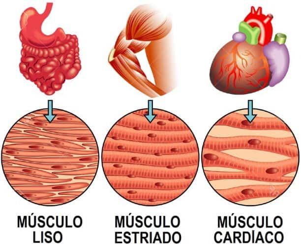
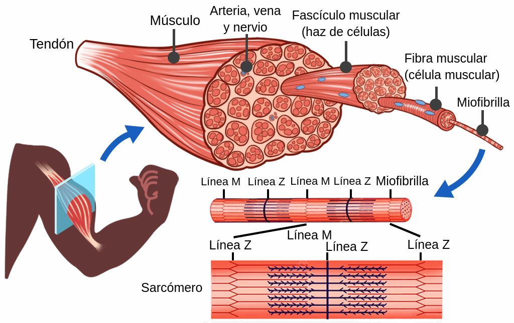
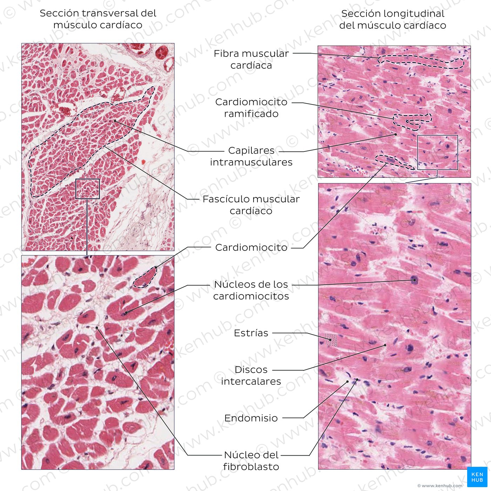
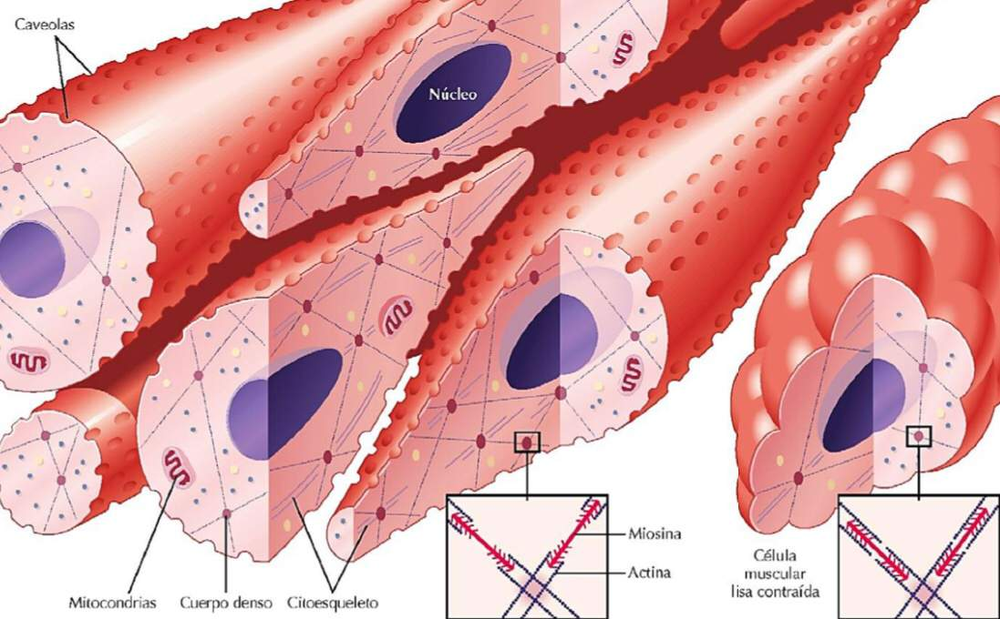

Tipos de músculos

Los músculos del cuerpo humano se clasifican en tres tipos: músculo liso, músculo cardíaco y músculo esquelético. Están formados por fibras musculares capaces de contraerse ante estímulos eléctricos, permitiendo el movimiento del cuerpo, órganos internos y vasos sanguíneos. Los músculos esqueléticos son de control voluntario y están asociados a huesos y articulaciones; el músculo liso y el cardíaco son involuntarios, actuando en órganos y el corazón, respectivamente. La contracción muscular se produce gracias a proteínas como la actina y la miosina, que convierten energía química en movimiento. En Siguiente podras ver una informacion mas detallada de cada tipo de musculo:
Características principales
Musculos esqueléticos:
Este tipo de músculos se caracteriza porque cada una de sus células (fibras musculares) está rodeada de tejido conjuntivo, lo que las aísla eléctricamente de otras. Por esta razón, cada fibra muscular debe ser inervada por una fibra nerviosa que está bajo control voluntario del sistema nervioso. Al conjunto de fibras musculares inervadas por una sola fibra nerviosa se le denomina unidad motora, y esta unidad responde al unísono ante la estimulación de su fibra nerviosa. Las unidades motoras de mayor tamaño se utilizan, generalmente, para movimientos "groseros", pero las unidades motoras pequeñas se emplean para movimientos finos y delicados que ameritan alto grado de control. La unidad funcional de un músculo esquelético se conoce como sarcómero. Cada sarcómero está delimitado por dos líneas Z y compuesto por filamentos de actina y miosina (proteínas contráctiles) interdigitadas unas con otras. Las zonas dentro de sarcómeros sucesivos que solo contienen filamentos finos de actina conforman las llamadas zonas claras, o estriaciones claras, que se observan en el microscopio óptico. Las zonas de los sarcómeros que contienen filamentos gruesos de miosina dan lugar a las estriaciones oscuras de los músculos esqueléticos. La contracción del músculo esquelético implica el deslizamiento de las fibras de actina y miosina (una sobre la otra) y no el acortamiento de dichas fibras proteicas.

Musculos cardiacos:
El corazón está compuesto de una clase especial de músculo estriado que, a diferencia del músculo esquelético, presenta conexiones estrechas entre sus fibras que le permiten funcionar como un sincitio. Es un músculo automático, es decir, un músculo capaz de producir su propia estimulación (contracción), sin la necesidad de la función del sistema nervioso. La inervación cardiaca del sistema nervioso solo proporciona un mecanismo de control de la función contráctil, pero no la origina. El aparato contráctil del corazón que le permite funcionar como una bomba, también está formado por sarcómeros delimitados por dos líneas Z. Sus fibras o células musculares (miocitos cardiacos), son ramificadas y están unidas entre sí a través de estructuras denominadas discos intercalares y uniones en hendidura. Los discos intercalares son estructuras de baja resistencia a través de los cuales puede conducirse la excitación eléctrica de una célula a otra. El automatismo cardiaco está a cargo de unas células musculares especializadas que generan la actividad eléctrica espontánea y rítmica que se transmite a las aurículas, de manera que estas se contraen al unísono y, con cierto retardo, pasan al sistema ventricular, que secuencialmente se contrae después de estas.

Musculos lisos:
El músculo liso se diferencia del músculo esquelético en que no posee estriaciones transversales visibles al microscopio. También tiene actina y miosina como aparato contráctil deslizante, pero estas proteínas no están dispuestas de forma regular y ordenada, como sucede en el músculo estriado. En vez de líneas Z, las fibras musculares del músculo liso poseen cuerpos densos en su citosol que están unidos a la membrana plasmática y que se unen, a su vez, con los filamentos de actina. Generalmente, estos músculos poseen pocas mitocondrias y su actividad mecánica depende del metabolismo de la glucosa. Son músculos involuntarios, es decir, están inervados por fibras nerviosas que no están bajo el control de la voluntad (por más que se quiera, no se puede inducir el movimiento de los intestinos voluntariamente). Existen varios tipos de músculos lisos, algunos con actividad automática (como las fibras del músculo cardiaco) y otros no.

Pasos para identificar un músculo
- Observa su ubicación en el cuerpo.
- Analiza su función principal.
- Determina si su control es voluntario o involuntario.
Comparativa de tipos de músculos
| Tipo | Ubicación | Control |
|---|---|---|
| Esquelético | Huesos | Voluntario |
| Liso | Órganos internos | Involuntario |
| Cardíaco | Corazón | Involuntario |